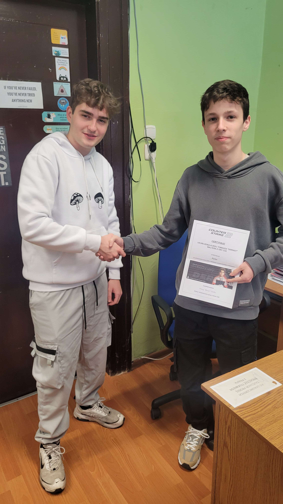
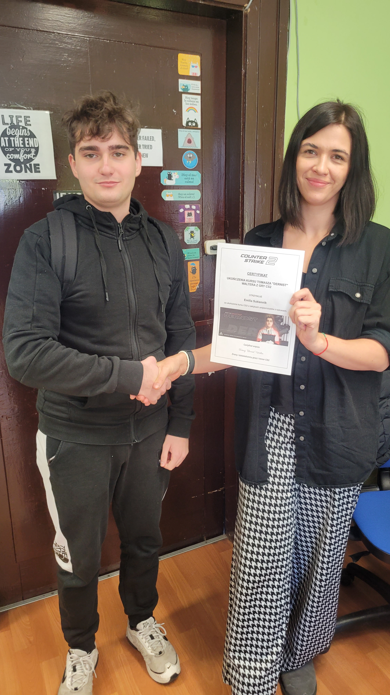

Galeria absolwentów


|
Piotr Prandzioch11.01.2024Piotr Prandzioch jest jednym z najlepszych absolwentów kursu o taktykach antyterrorystów w grze CS2, prowadzonego przez Tomasza “Dernist” Waltera. Piotr wykazał się nie tylko doskonałą znajomością strategii i technik walki, ale także umiejętnością współpracy z zespołem i szybkim podejmowaniem decyzji w sytuacjach kryzysowych. Piotr otrzymał certyfikat z wyróżnieniem, który potwierdza jego wysoki poziom umiejętności i pasji do gry. Certyfikat został wręczony przez samego Tomasza “Dernist” Waltera z okazji bycia pierwszym absolwentem jego kursów. Gratulujemy Piotrowi i życzymy mu dalszych sukcesów w CS2! Kurs trwał trzy miesiące i wymagał od Piotra około 10 godzin gry tygodniowo. Piotr musiał stawić czoła wielu wyzwaniom, takim jak odbijanie zakładników, rozbrajanie bomb, czy eliminowanie terrorystów. Jednym z najtrudniejszych zadań było przejęcie kontroli nad lotniskiem, gdzie Piotr musiał wykorzystać swoją wiedzę o mapie, sprzęcie i taktyce. Jednym z najciekawszych scenariuszy było zawarcie sojuszu z innym zespołem, aby wspólnie pokonać silniejszego przeciwnika. Piotr bardzo dobrze ocenia kurs i uważa, że polepszył swoje umiejętności i nauczył się wielu nowych rzeczy. Piotr poleca kurs wszystkim graczom, którzy chcą podnieść swój poziom i czerpać więcej satysfakcji z gry. Piotr ma też ambitne plany na przyszłość w CS2. Jego celem jest dołączenie do profesjonalnej drużyny i uczestniczenie w turniejach. Jego marzeniem jest zdobycie mistrzostwa świata w CS2 i zostać legendą tej gry. Trzymamy za niego kciuki! "Ten kurs odmienił moje życie!" |


|
Emilia Sukiennik17.01.2024Emilia Sukiennik jest jedną z najbardziej zaangażowanych uczestniczek kursu o taktykach antyterrorystów w grze CS2, prowadzonego przez Tomasza “Dernist” Waltera. Emilia wykazała się nie tylko dużym zainteresowaniem tematem i chęcią nauki, ale także zdolnością do adaptacji i kreatywności w grze. Emilia otrzymała certyfikat, który potwierdza jej udział w kursie i rozwój umiejętności. Certyfikat został wręczony przez samego Tomasza “Dernist” Waltera z okazji bycia drugą absolwentką jego kursów. Gratulujemy Emilii i życzymy jej dalszej zabawy w CS2! Kurs trwał trzy miesiące i wymagał od Emilii około 5 godzin gry tygodniowo. Emilia musiała stawić czoła wielu wyzwaniom, takim jak infiltracja bazy terrorystów, ochrona VIP-ów, czy współpraca z innymi graczami. Jednym z najtrudniejszych zadań było opanowanie sytuacji na statku, gdzie Emilia musiała wykorzystać swoją wiedzę o angielskim, komunikacji i negocjacji. Jednym z najciekawszych scenariuszy było stworzenie własnej drużyny, która rywalizowała z innymi zespołami. Kolejnym zadaniem, które Emilia musiała wykonać, było przejęcie metra, gdzie Emilia musiała wykazać się sprytem, refleksem i umiejętnością strzelania. Emilia poradziła sobie z tym zadaniem znakomicie i otrzymała pochwałę od Tomasza “Dernist” Waltera. Emilia bardzo dobrze ocenia kurs i uważa, że poszerzyła swoje horyzonty i nauczyła się wielu nowych rzeczy. Emilia poleca kurs wszystkim nauczycielom, którzy chcą spróbować czegoś nowego i czerpać więcej radości z gry. Emilia ma też ciekawe plany na przyszłość w CS2. Jej celem jest poprawienie swojego rankingu i zdobycie nowych znajomych. Jej marzeniem jest zorganizowanie turnieju w CS2 dla swoich uczniów i pokazanie im, że gra może być nie tylko rozrywką, ale też nauką. Emilia jest nauczycielką angielskiego w Zespole Szkół nr 1 im Adama Mickiewicza w Lublińcu. Emilia jest bardzo lubiana przez swoich uczniów i kolegów z pracy. Emilia jest też wychowawczynią klasy, w której uczy się Tomasz “Dernist” Walter. Emilia i Tomasz mają bardzo dobre relacje i często rozmawiają o grze. Tomasz zaproponował Emilii, żeby dołączyła do jego drużyny Constant Esports, która bierze udział w profesjonalnych turniejach w CS2. Emilia jednak odmówiła, mówiąc, że woli grać dla przyjemności i nie chce się angażować w rywalizację. Tomasz szanuje jej decyzję i nadal chętnie dzieli się z nią swoimi radami i doświadczeniem. Trzymamy za nią kciuki! "Ten kurs mnie odmłodził, dzięki niemu jestem na czasie, polecam!" |